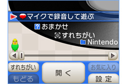
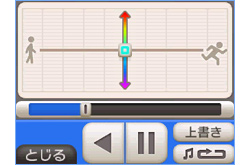
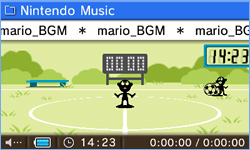
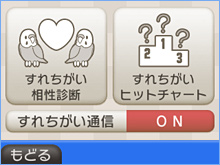

『ニンテンドー3DSサウンド』では、SDカードに保存された音声ファイルを再生することができます。
また、これまでの『ニンテンドーDSiサウンド』で再生に対応していた、拡張子が「.m4a」「.mp4」「.3gp」のAAC形式ファイルに加え、拡張子が「.mp3」のMP3形式ファイルも再生できるようになっています（※）。パソコンで音楽を管理している人にとっては、より便利なのではないでしょうか？
また、これまでの『ニンテンドーDSiサウンド』で再生に対応していた、拡張子が「.m4a」「.mp4」「.3gp」のAAC形式ファイルに加え、拡張子が「.mp3」のMP3形式ファイルも再生できるようになっています（※）。パソコンで音楽を管理している人にとっては、より便利なのではないでしょうか？
※
ただし、著作権保護された音声ファイルは再生できないので注意してください。

もちろん、音声ファイルをたんに再生するだけではありません。
再生中に下画面で操作すれば、再生スピードや音の高さを自由自在に変更できます。また「ラジオ」や「エコー」など、4種類のエフェクトもかけられます。
再生中に下画面で操作すれば、再生スピードや音の高さを自由自在に変更できます。また「ラジオ」や「エコー」など、4種類のエフェクトもかけられます。

音楽の再生中には、上画面に3Dの「ビジュアライザー」が表示されます。『ゲーム＆ウオッチ』風のミニゲームを実際にプレイすることもできてしまいます。自分の好きな音楽を流しながら見ているだけでも楽しめるので、ゲームの合間の休憩にはもってこいです。
さらに、「ビジュアライザー」には、ニンテンドー3DSのカメラで撮影した写真をスライドショー形式で次々に表示させる機能もあります。SDカードに入っている曲から、お気に入りのプレイリストを作成して連続再生も可能なので、好きなBGMを流せる3Dフォトフレームとして利用することもできそうです。
ちなみに、ニンテンドー3DSのフタを閉じてスリープ状態にしても、音楽はイヤホンやヘッドフォンをつないでおけば聴くことができます。ニンテンドー3DSを音楽プレーヤーとしてもフル活用しちゃいましょう。
ちなみに、ニンテンドー3DSのフタを閉じてスリープ状態にしても、音楽はイヤホンやヘッドフォンをつないでおけば聴くことができます。ニンテンドー3DSを音楽プレーヤーとしてもフル活用しちゃいましょう。

お気に入りの曲を「すれちがい」プレイリストに登録しておけば、「すれちがい相性診断」と「すれちがいヒットチャート」を楽しむこともできます。
電車の中や喫茶店などで、まわりに同じミュージシャンのファンの人がいないか、探してみるのも楽しいでしょう。意外な場所で自分と趣味が近い人とすれちがえたり、知らなかった名曲に出会うきっかけになったりするかもしれません。
電車の中や喫茶店などで、まわりに同じミュージシャンのファンの人がいないか、探してみるのも楽しいでしょう。意外な場所で自分と趣味が近い人とすれちがえたり、知らなかった名曲に出会うきっかけになったりするかもしれません。